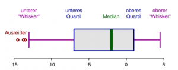

In diesem Artikel werde ich ein paar einfache Definitionen, die für die Stochastik wichtig sind, einführen.
Basisdefinitionen bei Zufallsexperimenten
Was ist ein ideales Zufallsexperiment? Ein ideales Zufallsexperiment sollte
- gut beschrieben,
- wiederholbar und
- mit mehreren möglichen Ausgängen (also zufällig),
sein. Die Zufallsgröße, wie beispielsweise die erwürfelte Zahl, nennt man Zufallsvariable. Es gibt auch noch die Statistische Variable. Wo der Unterschied ist, kann ich nicht sagen. Allerdings habe ich auf Wikipedia eine Diskussion geöffnet und hoffe auf baldige Klärung.
Was sind Merkmale? Merkmale sind die Ausgänge eines Zufallsexperiments. Sie können folgendermaßen gegliedert werden:
- quantitativ (Die Zufallsgröße(n) haben natürlicherweise eine Ordnung)
- stetig (Es können in einem Intervall beliebige Werte angenommen werden, z.B. die Größe eines Menschen.)
- diskret (Es können nur bestimmte Größen angenommen werden, z.B. die Größe eines Menschen in ganzen Zentimetern.)
- qualitativ (Es gibt keine natürliche Ordnung.)
- ordinal (Es geht um Zahlengrößen, z.B. Noten.)
- nominal (Etwas völlig anderes, z.B. Geschlecht.)
Urliste / Stichprobe vom Umfang n: $x := (x_1, x_2, ..., x_n)$ $H_x (a_j) := \text{Anzahl der Stichprobenelemente in x, die gleich} a_j \text{sind}$ $H_x (a_j)$ : Absolute Häufigkeit $h_x(a_j) := \frac{H_x (a_j)}{n}$ : Relative Häufigkeit Empirische Verteilungsfunktion $t \mapsto \underbrace{F_x(t)}{\text{empirische Verteilungsfunktion}} := \sum \limits$ Eine alternative Definition der empirischen Verteilungsfunktion ist $F_x(t) := \frac{1}{n} \sum \limits_{i=1}^n 1 { x_i \le t }$} {h_x (a_j)}, t \in \mathbb{R
Arithmetisches Mittel ("Durchschnitt"): $\overline x = \frac{1}{n} \sum \limits_{i=1}^n x_i = \frac{x_1 + ... + x_n}{n}$ Welcher Wert liegt in der Mitte?
Stichproben-Varianz: $s_x^2 := \frac{1}{n-1} \sum \limits_{i = 1}^n (x_i - \overline x)^2$ Stichproben-Standardabweichung: $s_x := + \sqrt{s_x^2}$ Wie stark weichen die Werte von einander ab?
Stichproben-Variationskoeffizient: $v_x := \frac{s_x}{\overline x}$ Wie groß ist die Schwankung relativ zum Durchschnitt?
Stichproben-Median / Zentralwert: Würde mal alle Werte einer Stichprobe sortieren, sollte der Median der Wert in der Mitte sein. Das ist nicht der Durchschnitt!
$$\tilde x := \begin{cases} x_{\frac{n+1}{2}}, & \mbox{wenn } n \mbox{ ungerade} \ \frac{1}{2} (x_\frac{n}{2} + x_{\frac{n}{2} + 1}), & \mbox{wenn } n \mbox{ gerade} \end{cases}$$
Quantil: Das $p$-Quantil unterteilt die Verteilung der Werte der Zufallsvariablen in zwei Bereiche: Links vom $p$-Quantil liegen $100 \cdot p$ Prozent aller Beobachtungswerte bzw. $100 \cdot p$ Prozent der Gesamtzahl der Zufallswerte. Rechts davon liegen $100 \cdot (1-p)$ Prozent aller Beobachtungswerte bzw. $100 \cdot (1-p)$ Prozent der Gesamtzahl der Zufallswerte.
Die Quartile sind die 0,25- und 0,75-Quantile.
$\alpha$-getrimmtes Stichprobenmittel: $\overline x_\alpha := \frac{1}{n-2k} \cdot (x_{n+1} + ... + x_{n-k})$ Spezialfall: $\overline x = \overline x_0$
Quartilsabstand: $\tilde x_{0,75} - \tilde x_{0,25}$ Spannweite: $x_n - x_1$
Visualisierungen
{kind=link}

Weitere Visualisierungsmöglichkeiten:
- Punktwolke
- Streudiagramm
Annäherungen
Durch eine Regressionsanalyse kann man ein Regressionsmodell erstellen. Es legt den Typ einer Regressionsfunktion fest. Eine Regressionsfunktion kann z.B. die Methode der kleinsten Quadrate sein:
$$\sum \limits_{j=1}^{n}\overbrace{(\underbrace{y_i -a -b \cdot x_j}_{\text{Residuum}})^2}^{ \begin{array}{l} \text{Damit sich negative positive}\ \text{Abweichungen nicht gegenseitig}\ \text{aufheben} \end{array} }$$
Geradenparameter errechnen
Tja, hier hat er die Folien viel zu schnell durchgeschaltet ... ich habe nur folgendes:
Regressionsgerade: $y = a^ + b^ \cdot x$ (eindeutig bestimmbar) $b^* = \frac{\sum \limits_{j=1}^n (x_j - \overline x) (y_j - \overline y)} {\sum \limits_{j = 1}^n (x_j - \overline x)^2}$
und $a^ = \overline y - b^ \cdot \overline x$
mit $r_{xy} = \frac{\frac{1}{n-1} \sum \limits_{j=1}^n (x_i - \overline x)(y_j - \overline y)} {b_x \cdot b_y}$ (Korrelationskoeffizient der Daten)
gilt $b^* = r_{xy} \cdot \frac{s_y}{s_x}$
Irgendwas war noch mit der Cauchy-Schwarz Ungleichung.
Falls jemand Anmerkungen hat, mehr mitgeschrieben hat oder einfach Fragen aufkommen: Postet doch einen Kommentar!